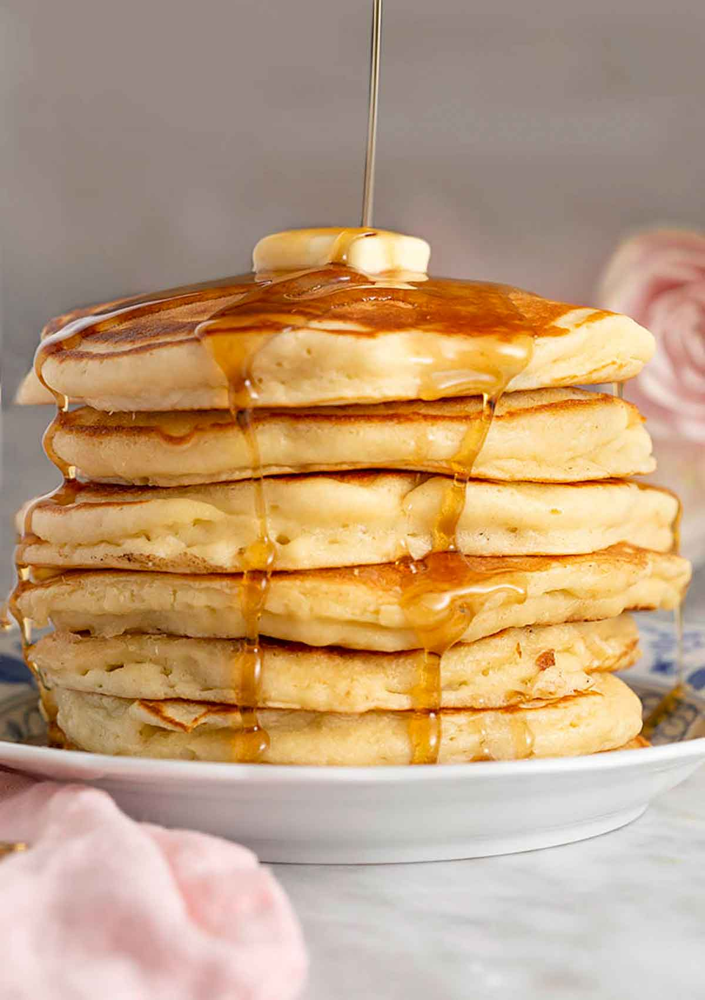

Pancakes

Description
This is simply the best pancake recipe for a tall, fluffy stack of tender pancakes, ideal for loading with your
favorite toppings. These perfect pancakes come together with pantry staples (no boxed pancake mix here!) and
barely any effort. It’s a brunch recipe that will delight the whole family!
Ingredients
- 1 1/3 Cups all purpose flour
- 1 Tbsp baking powder
- 2 Tbsp granulated sugar
- 1 Tsp salt
- 1 Cup milk
- 1 Large egg
- 4 Tbsp butter
- 2 Tsp vanilla extract
Steps
- Whisk the flour, sugar, baking powder, and salt in a large bowl.
- In a medium bowl whisk together the milk, egg, melted butter, and vanilla together until well combined.
- Pour the milk mixture into the flour and fold together just until combined. (It’s okay if there are a few
small lumps in the batter. This actually helps make fluffier pancakes!)
- Heat a large skillet or griddle over medium-high heat. Once hot, rub or brush with butter to lightly grease
the pan. Working in batches, add ¼ cup of batter for each pancake.
- Cook for a few minutes until golden on the bottom and bubbles start to appear on the top, then flip over and
cook an additional minute or until golden brown. Add more butter with each new batch of pancakes. Serve hot
with butter and a drizzle of maple syrup.